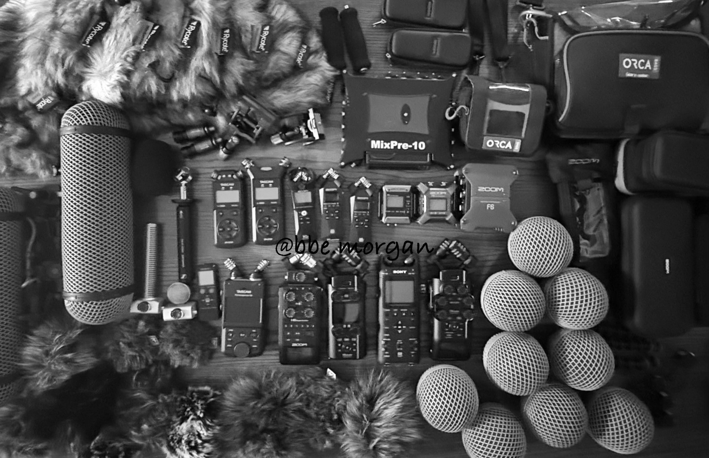
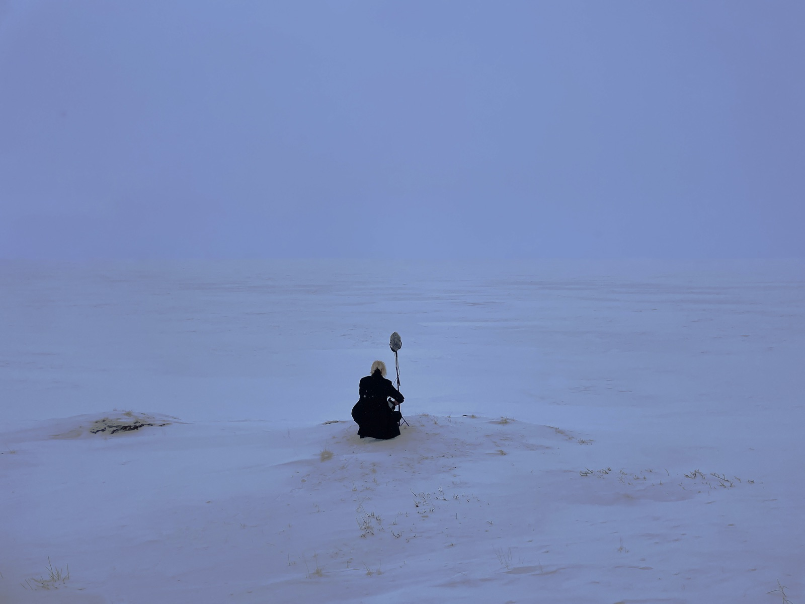

Workshop
Field Recording Picnic at Dawn - Promenade: Flow Over Ground


Program introduction
As the city takes a moment to breathe, we seek out the sounds that were once lost to us.
Flooded with a chaotic mix of noise, the city makes it hard to distinguish the good from the bad. Comfort and suffering, happiness and misery, all shout as loudly as they can—but what is buried beneath this roar? During the deepest hour of darkness, as the sleepless city takes a brief breath, we quietly attune ourselves to the sounds of the world and our own. Retrieving something with our fingertips from the waves of dawn, we sing together of a morning that will be a little different.
- Participants
- Anyone who wants to wait for the sunrise together at Hangang Park at dawn and listen together to its sounds
- Note
- Recording equipment will be provided according to the number of participants. You are also welcome to bring your own gear.
- Pre-meeting
- There will be a mandatory online pre-meeting on Friday, October 9th.
Workshop flow
Workshop flow
Part 1: ‘Dawn-Sunrise-Morning’ Sound Walk & Field RecordingHappening, Hangang Park
Part 2: Breakfast and Teatime, Drifting the churning sound awayHappening